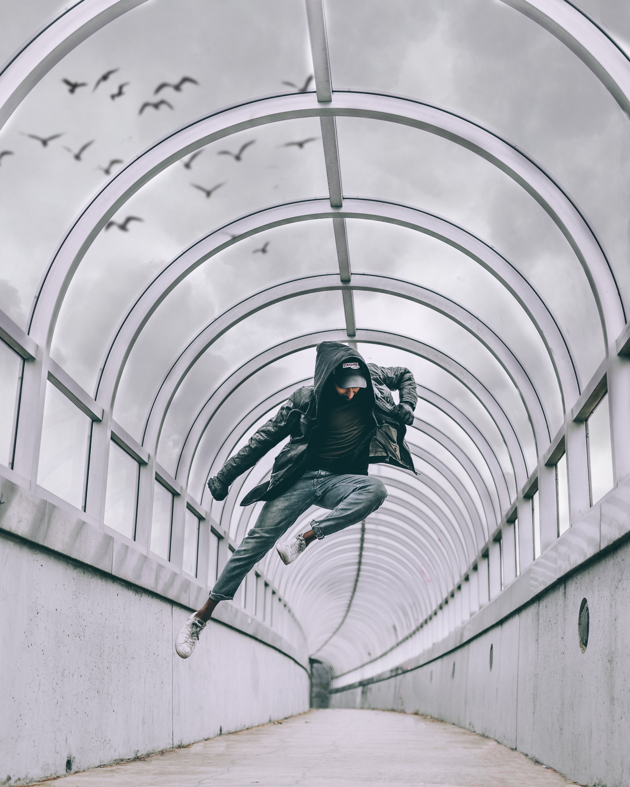
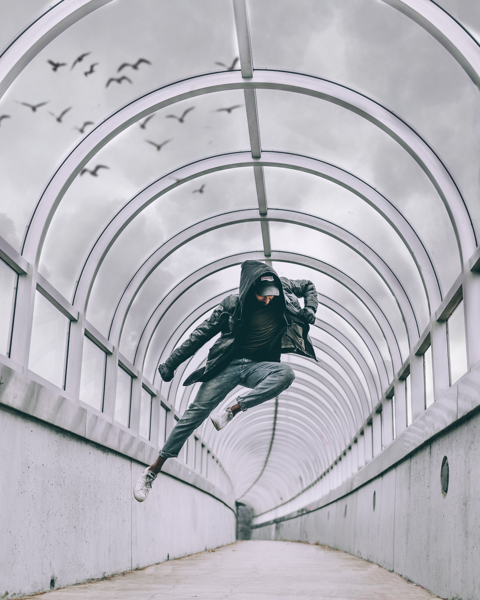
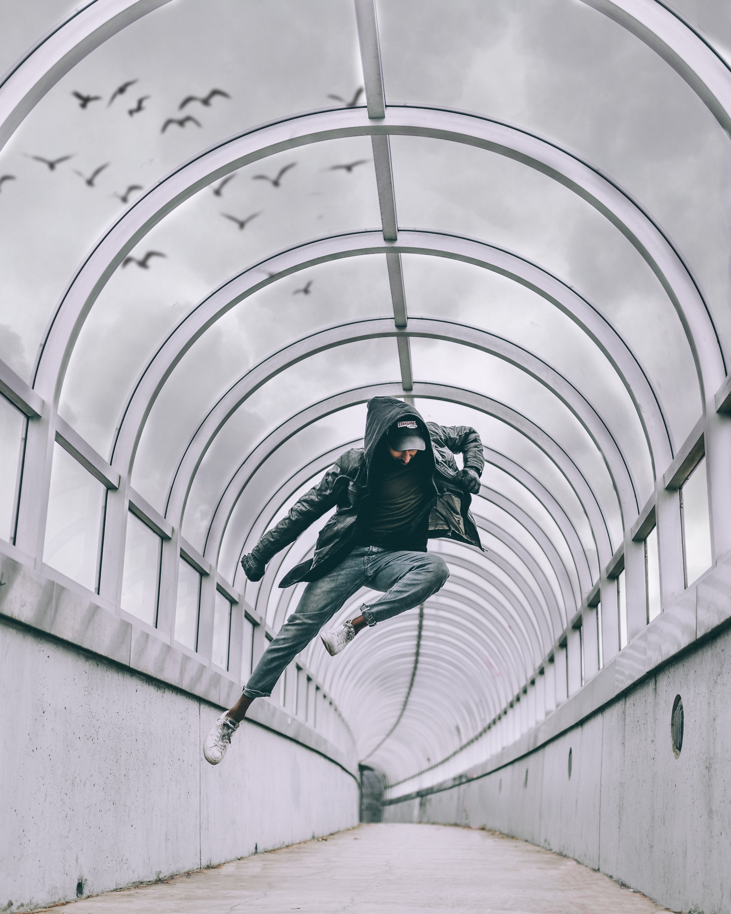
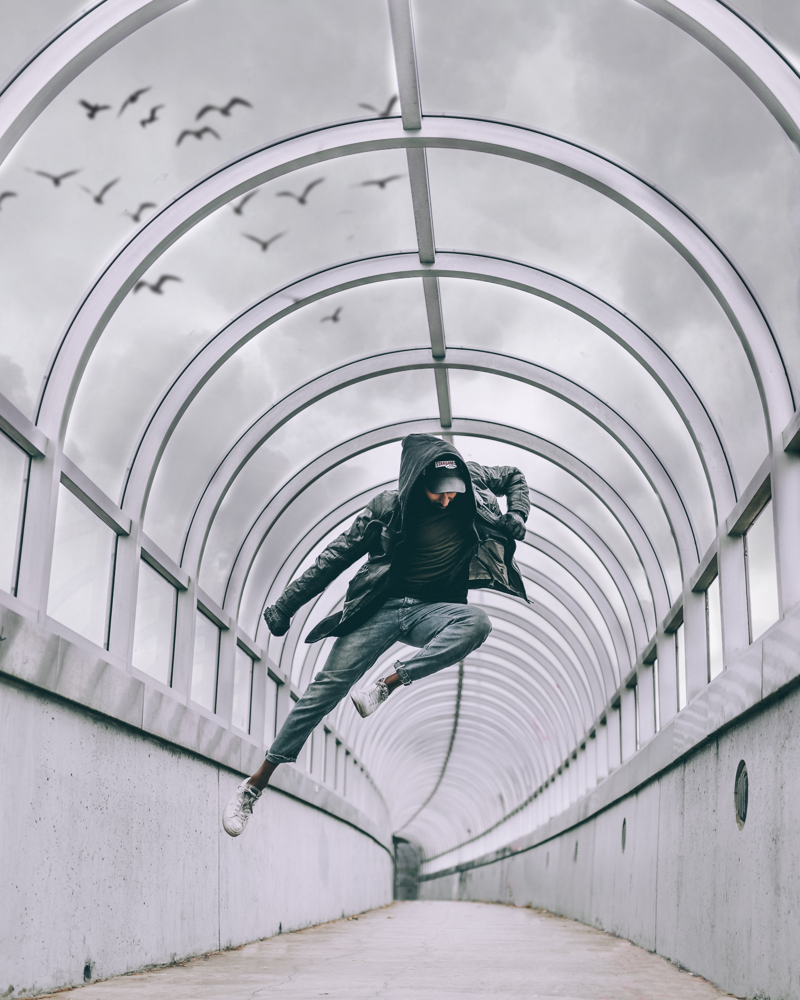

To dance means to move the body in a rhythmic fashion. Dancing can be done in time to music, but it does not need to be. Dancing is an art form: it is designed to look beautiful as well as being meaningful.
Tradition: some dances are traditions passed down over many centuries. Sociable: dancing with other people is a great way of being sociable. Expression: sometimes, dance can express emotions that words cannot. Celebration: no celebration would be complete without a dance. Romance: dancing can be very romantic.
Health: dancing is a great workout. Human endeavor: the skills of highly trained ballerinas push the limits of human endeavor. Enjoyable: watching a dance performance is very enjoyable. Past-times: dancing is a wonderful hobby.
Dance Diaries is a concept and a project founded by Izsépi Adrienn and Sagar Marktho in 2017. It is an open platform for those, who are passionate about art. The project aims to gather talented directors, cinematographers, choreographers, dancers, musicians, storytellers, and artists, to tell stories through dance and to make something special together. The event is about the launch of Dance Diaries and to tell more about their journey so far. The aim is to also meet artists from different background who would love to collaborate in any way, be it content writer, photographer, director, dancers etc. The event will also have the screening of videos which were made under Dance Diaries banner. This involves showcasing how a concept or a story is actually made into a video and what goes behind it. So if you are Dance enthusiasts and are looking for projects which are unconventional, then this is the event to be. Also artists from different backgrounds looking for collaboration to work on various innovative projects, we would love to meet and hear you out in the event.